Overview
In this homework I built a physically-based path tracer from scratch. Starting from raw geometry, I implemented every layer of the rendering pipeline: camera ray generation, primitive intersection (triangles and spheres), a Bounding Volume Hierarchy for acceleration, direct illumination via both hemisphere and importance sampling, full global illumination with recursive multi-bounce light transport, Russian Roulette unbiased termination, and adaptive sampling for efficient convergence.
The most interesting insight from this project is how dramatically each layer compounds on the last. A scene that took 40 seconds to render with brute-force intersection becomes nearly instant with BVH. A scene that looks flat and artificial with direct-only lighting comes alive the moment a second bounce is added — color bleeds between walls, shadows fill in softly, and the image suddenly looks real.
Ray Generation and Scene Intersection
This part builds the foundation of the path tracer. I start by generating rays from the camera and testing whether those rays intersect with scene geometry. Without these pieces, nothing can be rendered.
Generate Ray
I implement generate_ray in camera.cpp. The goal of this method is to take a normalized image coordinate and return a ray in world space that starts at the camera and passes through the corresponding point on the virtual sensor.
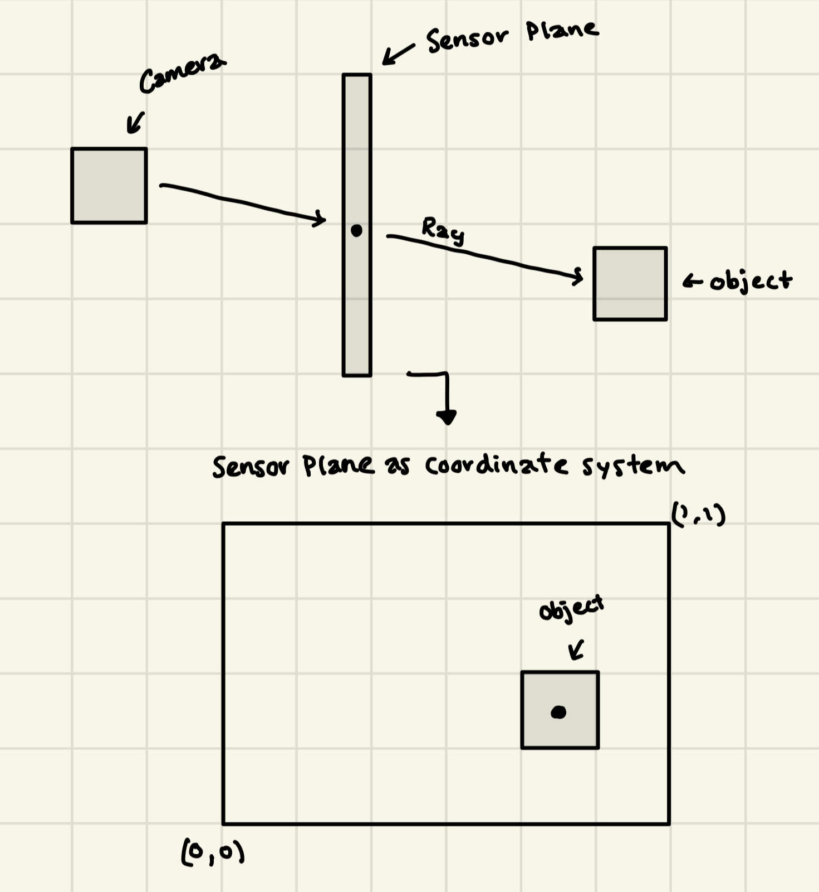
The rectangle in front of the camera is the sensor plane. It lies at \(z = -1\) in camera space and spans horizontally from \(-\tan(\text{hFov}/2)\) to \(+\tan(\text{hFov}/2)\) and vertically from \(-\tan(\text{vFov}/2)\) to \(+\tan(\text{vFov}/2)\). The formula
maps the normalized pixel coordinate from \([0,1]\) to the physical width of the sensor. A pixel at \(x = 0\) maps to the left edge and \(x = 1\) maps to the right edge. The same mapping applies vertically using \(\text{sensor_y} = (2y-1)\cdot\tan(\text{vFov}/2)\).
The ray direction in camera space is the vector from the origin \((0,0,0)\) through the sensor point. However the camera could be tilted, rotated, or positioned anywhere in the actual scene. To accommodate this I use the camera-to-world matrix c2w, which bridges the gap between the camera's local orientation and its position in world space: dir_world = c2w * dir_camera.
Steps to implement:
- Take a pixel at normalized position \((x, y)\) and determine where on the sensor plane the pixel lands. This gives a direction vector in camera space — from your eye to the point on the sensor plane.
- Rotate that direction into world space using
c2w, normalize it to a unit vector, and build the ray starting at camera positionpos. - Set
ray.min_t = nClipandray.max_t = fClip.nClipis the near clip distance — objects closer than it are ignored (prevents the camera seeing things it is inside of).fClipis the far clip distance — objects farther than it are ignored.
Generating Pixel Samples
I implement raytrace_pixel in pathtracer.cpp. The goal is to estimate the color of a single pixel by shooting multiple rays through different parts of the pixel and averaging the results.
Because a pixel is not a single point, it is important to sample multiple random locations within it to get the true color — the average of all light arriving through the entire square region. I estimate this average using Monte Carlo integration: shoot ns_aa rays through random points within the pixel square and average what each ray sees.
This matters because sampling only the center of each pixel produces severe aliasing — sharp jagged edges on diagonal lines. By randomly jittering the sample position, the error becomes random noise rather than structured artifacts, which averages out cleanly with more samples.
Steps to implement:
- For each of
ns_aasamples, callgridSampler->get_sample()to get a random 2D offset within the unit square. - Add the jitter to the pixel's bottom-left corner
(x, y)and divide by the image width and height to normalize into \([0,1]\) coordinates thatgenerate_rayexpects. - Call
generate_ray(nx, ny)to get the ray and setr.depth = max_ray_depth. - Call
est_radiance_global_illumination(r)to get the radiance along that ray and accumulate it. - After all samples, divide by
ns_aato get the Monte Carlo average and write it tosampleBuffer.
Ray–Triangle Intersection
I implement has_intersection and intersect in triangle.cpp. Every object in a scene is made of triangles, so without these functions nothing can be rendered.
I use the Möller–Trumbore algorithm. The key insight is that any point on a triangle can be described using barycentric coordinates — three weights \(w, u, v\) where \(w + u + v = 1\). This produces smooth curved surfaces even though the underlying geometry is flat triangles. With these we can identify how much each vertex contributes to the point: \[ \text{point} = w \cdot p_1 + u \cdot p_2 + v \cdot p_3 \] If all weights are between 0 and 1 the point is inside the triangle. Setting the ray equation \(r(t) = \text{origin} + t \cdot \text{direction}\) equal to a point on the triangle gives three equations and three unknowns \((t, u, v)\). By using cross products and dot products I avoid the need to explicitly compute the plane the triangle lies on.
Steps to implement:
- The algorithm begins by computing two edge vectors from \(p_1\): \(e_1 = p_2 - p_1\) and \(e_2 = p_3 - p_1\), then uses cross products to efficiently solve the system of equations.
- Next I do bounds checks: \(a\) cannot be near zero — this means the ray is parallel to the triangle; \(u\) must be greater than zero and less than one to ensure the hit point is within the triangle's bounds; \(v\) must be greater than zero and \(u + v\) must be less than or equal to one; \(t\) must be within \(\text{min_t}\) and \(\text{max_t}\).
- Then I populate the intersection record.
has_intersectiononly needs to return true or false and stops as soon as it confirms a hit.intersectis identical but additionally fills in the Intersection struct:t(how far along the ray the hit occurred),n(the surface normal at the hit point, interpolated using barycentric coordinates),primitive(pointer to the triangle), andbsdf(surface material). - Finally I update
r.max_t = t. Every time a valid intersection is found it is important to update it so that we discard things farther away in the future and only keep the closest hit to the camera.
Ray–Sphere Intersection
I implement has_intersection and intersect in sphere.cpp. The goal of these functions is very similar to Task 3, except with spheres — determine whether a ray hits a sphere, and if so, where. Unlike triangles, spheres have an easier mathematical equation where a point \(p\) is on the sphere if its distance from the center equals the radius \(r\): \(|p - o|^2 = r^2\).
- I start by substituting the ray equation \(r(t) = \text{origin} + t \cdot \text{direction}\) to get a quadratic equation in \(t\): \(at^2 + bt + c = 0\) where \(a = d \cdot d\), \(b = 2 \cdot (\text{oc} \cdot d)\), and \(c = \text{oc} \cdot \text{oc} - r^2\) (\(\text{oc}\) is the vector from the sphere center to the ray origin).
- Next I use \(b^2 - 4ac\) to determine if the intersection exists. If the answer is negative the ray misses the sphere. If it is zero it hits at exactly one point. If it is positive the ray passes through the sphere at two points.
- When I find an intersection I test the smaller \(t\) first since that is the closer hit. If it is out of bounds then I try the larger one. This allows me to handle the case where the camera may be inside the sphere.
- Next I compute the normal: \(n = (\text{hit_point} - \text{center}).unit()\). Instead of using barycentric coordinates I just use the vector from the center to the hit point (normalized). This will always point directly outward from the surface.
I also use a helper function test. This function handles the quadratic solving that computes \(t_1\) and \(t_2\). Both functions implemented in this task call this helper, which allows for clean code and avoids duplication.
Results — Normal Shading
.png)
.png)
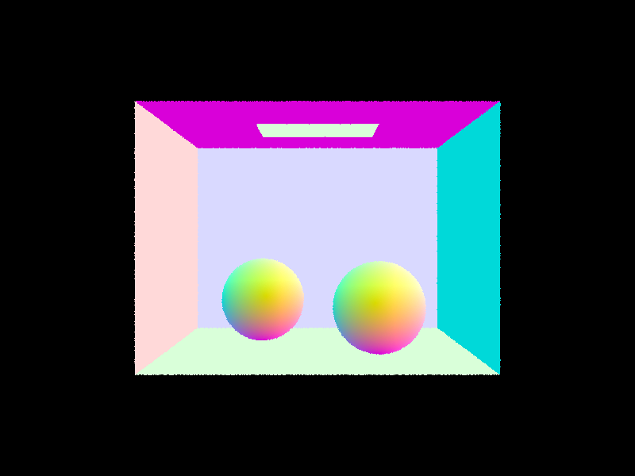
Bounding Volume Hierarchy
Without acceleration, the path tracer tests every single ray against every primitive in the scene — \(O(n)\) time complexity per ray. For more complex scenes this is incredibly slow and unideal for our purposes. In this part I implement a bounding volume hierarchy that reduces the time complexity to \(O(\log n)\) which is significantly better. This is done through organizing the primitives into a binary tree of bounding boxes that allow the renderer to quickly discard groups of primitives that are not within a range to be hit by the ray.
Constructing the BVH
I implement construct_bvh in bvh.cpp. The construction is recursive:
- Compute the bounding box of all primitives in the current list.
- If there are
max_leaf_sizeor fewer primitives, create a leaf node and stop. - Otherwise choose a split axis and point, divide into two groups, and recurse on each.
For the split axis I chose the longest axis of the bounding box. This produces compact subtrees with good ray rejection. For the split point I use the average centroid of all primitives along that axis, which distributes primitives more evenly than the midpoint of the box. I use std::partition to rearrange primitives in place without copying. If all primitives fall on one side (the degenerate case), I fall back to splitting the list in half to avoid infinite recursion.
Bounding Box Intersection
I implement BBox::intersect in bbox.cpp using the slab method. An axis-aligned box is the intersection of three pairs of parallel planes. For each axis I compute where the ray enters and exits that slab:
ta = (min[i] - origin[i]) * inv_direction[i] tb = (max[i] - origin[i]) * inv_direction[i]
I use the precomputed inv_d on the ray to avoid expensive division. If the ray direction is negative along an axis, ta and tb are swapped. The ray hits the box only if all three slab intervals overlap — i.e., tmin <= tmax after narrowing across all three axes.
BVH Traversal
I implement has_intersection and intersect in bvh.cpp. Both functions first test the ray against the current node's bounding box — if it misses, the entire subtree is skipped immediately.
has_intersection is designed to short circuit as soon as any hit is found. This is because we only need to know that something was hit with this function. intersect, on the contrary, needs to identify what was hit. Both children are checked to guarantee that we find the closest hit. In addition, it is important to note that because r.max_t is updated every time a closer hit is found, the bounding box test naturally rejects anything farther away, thus keeping the traversal efficient.
Results
.png)
.png)
.png)
Timing Comparison
| Scene | Primitives | Without BVH | With BVH | Speedup | Intersections/ray |
|---|---|---|---|---|---|
| cow.dae | 5,856 | 0.68 s | 0.037 s | ~18× | 279 → 4.2 |
| maxplanck.dae | 50,801 | — | 0.044 s | — | 5.1 |
| CBlucy.dae | 133,796 | — | 0.034 s | — | 4.4 |
The speedup from the addition of BVH acceleration was significant. After implementing BVH, rendering the cow mesh had an approximately 18x speedup moving from 0.68 seconds to 0.037 seconds. In addition the average intersection tests per ray drop from 279 to 4.2 — clearly showcasing the \(O(n)\) to \(O(\log n)\) improvement. Further, scenes like Max Planck and CBlucy were able to render in under 0.05 seconds — while before they would have been impractical and taken too long.
Direct Illumination
Diffuse BSDF
I implement the diffuse BSDF in bsdf.cpp. A diffuse, or Lambertian, surface scatters light equally in all directions — regardless of where the light came from or where you are looking from. The BSDF for a Lambertian surface is:
\[ f(\omega_i \to \omega_o) = \frac{\text{reflectance}}{\pi} \]
The reflectance represents the material's color. We divide by \(\pi\) to ensure energy conservation and that the surface cannot reflect more light than it receives. Since the surface scatters equally in all directions, \(\omega_o\) and \(\omega_i\) do not affect the result.
In addition, I implement sample_f. This function samples an incoming direction using a cosine weighted hemisphere sampler and returns f(wo, wi) for that sample.
Zero-Bounce Radiance
I implement zero_bounce_radiance. Zero bounce refers to light that reaches the camera without bouncing off anything — rays that hit a light source directly. The implementation returns the emission of whatever surface was hit:
return isect.bsdf->get_emission();
For most surfaces this returns black. For light sources it returns their brightness and color. At this stage the render shows only the area light as a white rectangle against a black scene.
Direct Lighting — Uniform Hemisphere Sampling
I implement estimate_direct_lighting_hemisphere. The goal of this method is to estimate how much light arrives at a surface point directly from the light source. This approach is based on the rendering equation:
\[ L_{\text{out}} = \int f(\omega_i \to \omega_o) \cdot L_{\text{in}}(\omega_i) \cdot \cos\theta \, d\omega_i \]
I estimate this integral using Monte Carlo integration, sampling num_samples random directions uniformly on the hemisphere above the hit point. For each sampled direction I cast a shadow ray. If it hits a light source I accumulate the contribution using:
\[ f \cdot L_{\text{emission}} \cdot \cos\theta \cdot 2\pi \;/\; N \]
The \(2\pi\) comes from dividing by the uniform hemisphere PDF of \(1/(2\pi)\). The \(\cos\theta\) term equals wi.z in object space since the normal is aligned with the Z axis.
Direct Lighting — Importance Sampling
I implement estimate_direct_lighting_importance. As opposed to sampling random directions and hoping they hit a light, the idea behind importance sampling is that you directly sample points on each light source and check if they are visible from the hit point.
For each light in the scene I use sample_L to get a sampled direction wi, distance to light, and PDF. I then cast a shadow ray with max_t = distToLight - EPS_F to check if anything blocks the path. If unblocked the contribution is:
\[ L_{\text{out}} \mathrel{+}= f \cdot \text{radiance} \cdot \cos\theta \;/\; \text{pdf} \]
Point lights (is_delta_light() == true) only need one sample because all samples are identical. For area lights I take ns_area_light samples and average them.
Comparison — Both Methods
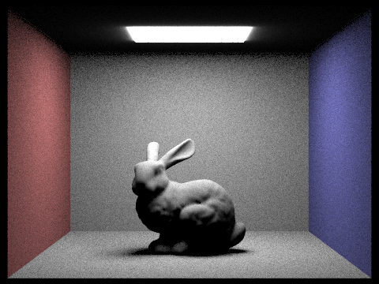
Noise vs. Light Ray Count (Importance Sampling, 1 spp)
Analysis
Both sampling types estimate the same integral, but they differ in efficiency. Hemisphere sampling shoots rays in random directions and only counts contributions from the small fraction that happen to hit a light source. Due to the randomness and focus on all directions, many samples end up contributing nothing, but still take up time and energy. This leads to high variance and noisy images as seen above. Importance sampling eliminates this waste by directly sampling the lights and therefore guaranteeing every sample contributes useful information. The end result is an image with significantly less noise with the same number of samples. Another note to point out is that in the noise comparison images, you can see that as you increase the light ray count, shadows smooth out significantly. One light ray results in harsh and noisy shadows whereas 64 light rays produce clean and soft shadows.
Global Illumination
In Part 3 I implemented direct illumination — light traveling directly from a source to a surface to the camera. However, real world lighting is far more complex. This is because light bounces off many surfaces before reaching your eyes. It can create effects like color bleeding — imagine a red wall casting a pink tint on a white surface like what we see with the bunny in between a red and blue wall. In addition it can create soft indirect lighting that fills in shadows. This ties directly into Part 4 where I implement full global illumination through recursively tracing these multi-bounce light paths.
Diffuse BSDF — sample_f
In this task I implement the function DiffuseBSDF::sample_f — slightly different from the function DiffuseBSDF::f that I implemented in Part 3. In addition to taking the incoming solid angle and outgoing solid angle and returning f(wi→wo), I also sample the incoming ray. The key difference is that it randomly samples an incoming direction using the cosine weighted hemisphere sampler and returns f(wo, wi) for that sample. Basically, it samples directions proportional to their cosine contribution to ultimately reduce variance in the indirect lighting estimate.
at_least_one_bounce_radiance
I implement at_least_one_bounce_radiance in pathtracer.cpp — the core of global illumination. The function works recursively:
- Add direct lighting at the current hit point using
one_bounce_radiance. - Sample a new random direction using the surface BSDF via
sample_f. - Cast a ray in that direction.
- If it hits something, recursively call itself on the new hit point and accumulate the indirect contribution weighted by \(f \cdot \cos\theta / \text{pdf}\).
Each recursive call decrements r.depth by 1. When it reaches 1 the recursion stops. The isAccumBounces flag is used to keep track of all bounces up to max_ray_depth — the normal global illumination mode. Once it is set to false it only returns the contribution from exactly the max_ray_depth bounce, which is useful for visualizing individual bounces.
Direct vs. Indirect Illumination
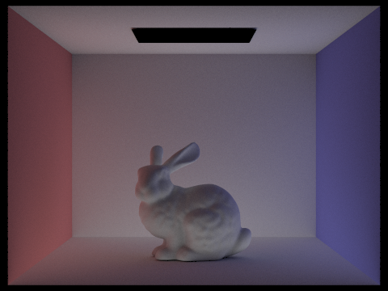
Direct illumination alone tends to produce harsh shadows and little to no color bleeding. Contrarily, indirect illumination alone shows the softer glow that fills in shadows and carries color between surfaces. It is only together that you can achieve a photorealistic result.
Individual Bounces (isAccumBounces = false, 1024 spp)
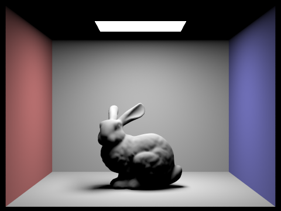
The 2nd bounce of light is especially significant as it illuminates areas that receive no direct light (i.e. the underside of the bunny, the ceiling, etc). This is something that rasterization is not able to achieve without explicit hacks to overcome the issue. Further, the 3rd bounce adds subtle color bleeding from the red and blue walls onto nearby surfaces. Beyond the 3rd bounce contributions become less significant but do still increase overall image quality.
Accumulated Bounces (isAccumBounces = true, 1024 spp)
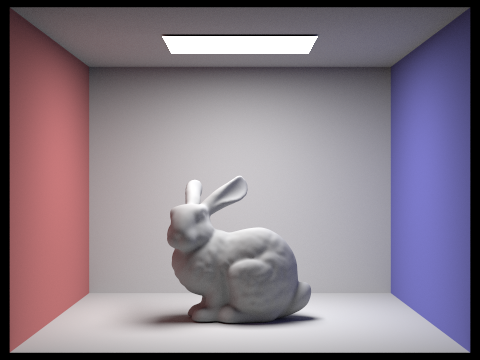
Similarly, each additional bounce adds more light to the scene. The jump from m=1 to m=2 is the most dramatic as it adds all indirect lighting. Again, similar to when isAccumBounces is false, we notice that after m=3 the differences become more subtle but still add to the overall image quality.
Russian Roulette
This part was interesting to implement. Currently with a fixed depth termination the estimator is biased — paths longer than max_ray_depth have a zero probability of being sampled. The goal of this task is to solve this issue by randomly terminating rays with a termination probability that compensates by dividing surviving rays by the continuation probability. This makes the estimator unbiased while still keeping the computation finite to avoid an infinite loop.
In this implementation I use a continuation probability of 0.65. The first indirect bounce is always traced regardless of Russian Roulette. After that however, each subsequent bounce has a 35% chance of being terminated. When a ray does survive its contribution is divided by 0.65 to compensate for the terminated rays.
Russian Roulette Results (1024 spp)
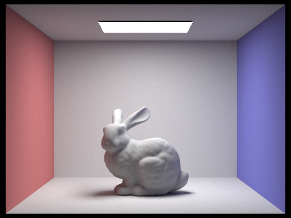
When I set max_ray_depth to 100 with Russian Roulette it produces a similar result to max_ray_depth = 5 without Russian Roulette. This demonstrates that this method naturally terminates most paths well before 100 bounces yet keeps the estimate unbiased.
Global Illumination — 1024 spp
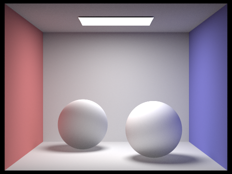
Sample Rate Comparison (4 light rays)
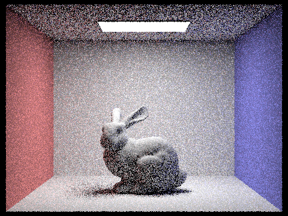
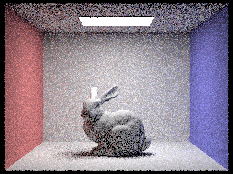
Notice that noise decreases significantly as sample count increases. The improvement from 1 to 16 samples is dramatic. However, beyond 64 samples the improvement becomes more subtle but is still visible in fine details.
Adaptive Sampling
In previous parts that I implemented, every pixel received exactly ns_aa samples — regardless of complexity. This is not efficient — simple pixels like flat and uniformly lit walls converge quickly and don't need that many samples. However, complex pixels like shadow edges or detailed geometry require many samples to look natural and clean. Adaptive sampling is a way to solve this issue by monitoring each pixel's statistics as we sample it, and then stopping once it has converged. This allows us to put energy into the samples that need it the most, while spending less energy and time on the ones that don't.
Algorithm
As samples are accumulated for each pixel, I keep track of two values:
Every samplesPerBatch number of samples, I compute the mean \(\mu = s_1 / n\) and variance \(\sigma^2 = \frac{1}{n-1}(s_2 - s_1^2/n)\). From there I compute a convergence measure:
If \(I \leq \text{maxTolerance} \cdot \mu\), then the pixel has converged and sampling is no longer needed and therefore stops early. The 1.96 was chosen from basic statistics as it represents a 95% confidence interval — we are 95% confident the true pixel value lies within \(I\) of the current estimate.
Implementation
I modify raytrace_pixel in pathtracer.cpp to include adaptive sampling. The key changes from the original implementation are:
- Track
s1ands2as running sums of illuminance and illuminance squared. - Use
L.illum()to convert each sample's RGB radiance to a single scalar luminance value for the convergence check. - Every
samplesPerBatchsamples check the convergence condition and break early if satisfied. - Write the actual sample count
ntosampleCountBufferrather thannum_samples— this is what generates the sample rate visualization image. - Divide the accumulated radiance by
n(actual samples taken) rather thannum_samplesas it is possible we stopped early.
Results
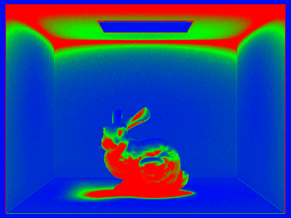
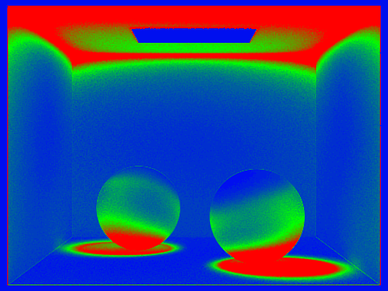
In the sampling rate images blue represents low sample counts and red represents high sample counts. The more simple regions like flat walls and the ceiling converge quickly and use very few samples. However, when you look at the more complex regions like the shadow edges, the bunny silhouette and the areas with strong indirect lighting — they require many more samples to successfully converge. This demonstrates that adaptive sampling successfully identifies and concentrates effort on the most challenging parts of the image.